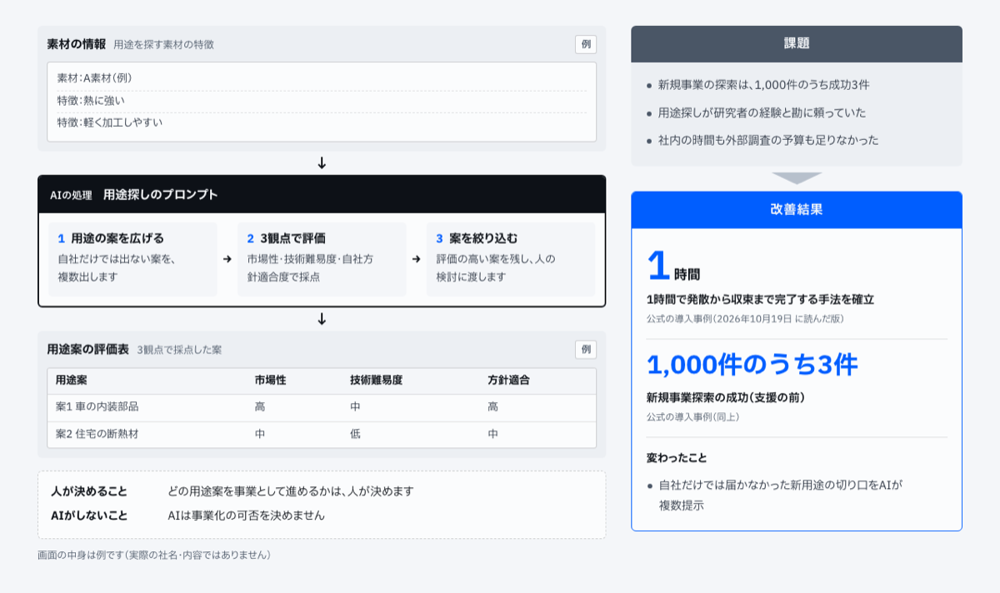
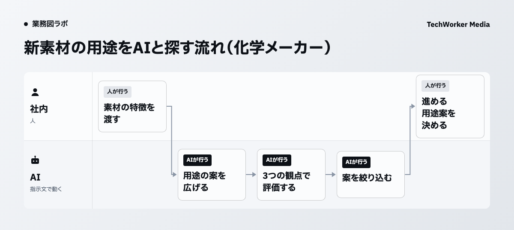

用途探しを、1時間で発散から収束まで進めます
化学メーカーで、新素材の用途探しを生成AIの手法にしました。AIが用途の案を広げ、3つの観点で定量評価し、絞り込みまで1時間で進みます。
パートナー企業との協業による支援です。会社名は伏せています。

AIが読むのは、用途を探す素材の特徴です。届くのは、3つの観点で採点した用途案の評価表です。
仕組みの全体は事例のページ「新素材の用途探しを、1時間で発散から収束まで」にまとめています。
1,000件のうち、成功は3件でした
支援の前は、新しい事業の種を探しても、1,000件のうち成功は3件でした。
社内に十分な時間はなく、外部調査の大きな予算もありません。新素材の用途探しは研究者の経験と勘に頼っていました。
速さと広がりの両立が難しい状態でした。そこで生成AIによる用途探しの手法を作り、発散から収束までの進め方を体系にしました。
AIが案を広げ、3つの観点で採点します
AIの処理は3つの段に分かれます。用途の案を広げる、3つの観点で評価する、案を絞り込む、の順です。

1つ目の段では、自社だけでは出ない案を、AIが複数挙げます。
2つ目の段では、市場性・技術難易度・自社方針適合度の3つで採点します。図の例の評価表では、車の内装部品や住宅の断熱材という案に、高・中・低を付けています。
3つ目の段では、評価の高い案を残し、人の検討に渡します。
どの案を事業として進めるかは、人が決めます
AIがするのは、案を広げて採点するところまでです。どの用途案を事業として進めるかは、人が決めます。
AIは事業化の可否を決めません。採点の結果は、人が検討するための材料として渡します。
1時間で発散から収束まで終える手法になりました
発散から収束までを1時間で終える手法ができました。
AIは自社だけでは届かなかった新用途の切り口を、複数出しています。
自社で試すときは、採点の観点を先に言葉にします
自社で同じ形を試すなら、最初に採点の観点を言葉にしてからAIに渡します。ここからは本記事の提案です。
観点が決まっていると、人が絞り込む段で案を比べやすくなります。
観点ごとに、高・中・低のような同じ物差しを使います。最後にどの案を進めるかは、人が決める段として残しておきます。
研修で、部署の仕事に合わせた使い方を身につけます
当社の見立てでは、用途探しのように案を広げて絞る仕事は、部署ごとの題材で練習すると使い方が身につきます。
TechWorkerのセキュリティ×生成AI研修は情報を守りながら生成AIを全社で使う研修です。教材は毎週更新します。
出典と、本記事で提案した範囲
- TechWorker「実績・導入事例」（2026年10月19日に読んだ版）。パートナー企業との協業による支援です。
- TechWorker「AIエージェントの事例」の事例のページ（2026年10月20日公開）。
支援の前の状態、AIの処理の3つの段、1時間で終える手法は、当社の導入事例にある事実です。採点の観点を先に言葉にすることは、本記事の提案です。図と画面の中身は例で、実際の素材や案ではありません。